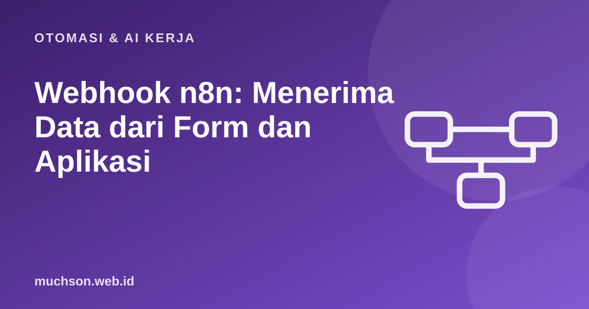

Beranda › Artikel › Otomasi & AI Kerja
Otomasi & AI KerjaWebhook n8n: Menerima Data dari Form dan Aplikasi
Webhook adalah cara aplikasi lain "mengetuk pintu" n8n: begitu ada kejadian (formulir terkirim, pembayaran berhasil, commit baru), aplikasi itu mengirim permintaan HTTP ke alamat n8n dan alur kerja langsung berjalan. Tidak perlu polling berulang. Ini pemicu paling serbaguna, dan paling sering salah diamankan.
Sebaiknya sudah paham: dasar n8n, JSON dan HTTP dasar

Setelah membaca dan mencoba materi ini, Anda mampu:
- membuat node Webhook dan memahami URL uji vs produksi
- membaca body, query, header, dan parameter dari permintaan
- mengamankan webhook dengan token atau tanda tangan
- mengatur respons ke pengirim
- merancang penerima yang tahan duplikasi (idempotensi)
n8n adalah alat visual; alur kerjanya dibuat di editor n8n, bukan di halaman ini. Contoh kode JavaScript di bawah meniru logika node Code dan dijalankan sungguhan dengan Node.js agar hasilnya dapat dibuktikan. Antarmuka dan nama node dapat berubah antar versi, jadi cocokkan dengan dokumentasi n8n.
Cara kerja
URL uji dan produksi
| Test URL | Production URL | |
|---|---|---|
| Bentuk | .../webhook-test/jalur | .../webhook/jalur |
| Kapan aktif | Hanya saat Anda menekan "Listen for test event" | Selama workflow diaktifkan (Active) |
| Data | Tampil di editor untuk dirancang | Tercatat di Executions |
| Pakai untuk | Mengembangkan dan mengamati bentuk data | Dipasang di aplikasi pengirim |
Kesalahan klasik: memasang Test URL di aplikasi pengirim lalu heran mengapa webhook tidak masuk setelah workflow aktif. Setelah selesai merancang, ganti ke Production URL dan aktifkan workflow.
Mencoba dengan curl
curl -X POST "https://n8n.contoh.id/webhook/pendaftaran" \
-H "Content-Type: application/json" \
-H "X-Token: rahasia-panjang" \
-d '{"nama":"Ani","surel":"ani@contoh.id","ponsel":"0812-3456-7890","kursus":"React Dasar"}'Simulasi penerima webhook
Berikut peniruan logika yang seharusnya ada di workflow: cek token, validasi isi, tolak duplikat, lalu balas dengan kode HTTP yang tepat. Perhatikan urutan pemeriksaannya.
const TOKEN = 'rahasia-panjang';
const sudahDiproses = new Set(); // di n8n: simpan di basis data/Data Table/Redis
function validasi(b) {
const galat = [];
if (!b || typeof b !== 'object') return ['body kosong'];
if (!b.nama || b.nama.trim().length < 2) galat.push('nama wajib');
if (!/^[^\s@]+@[^\s@]+\.[^\s@]+$/.test(b.surel || '')) galat.push('surel tidak valid');
if (!b.idPesanan) galat.push('idPesanan wajib (untuk idempotensi)');
return galat;
}
function tangani(req) {
if (req.headers['x-token'] !== TOKEN) return { status: 401, body: { galat: 'tidak berwenang' } };
const galat = validasi(req.body);
if (galat.length) return { status: 422, body: { galat } };
if (sudahDiproses.has(req.body.idPesanan)) return { status: 200, body: { pesan: 'duplikat diabaikan' } };
sudahDiproses.add(req.body.idPesanan);
return { status: 200, body: { pesan: 'diterima', nama: req.body.nama } };
}
const kasus = [
['tanpa token', { headers: {}, body: { nama: 'Ani', surel: 'a@x.id', idPesanan: 1 } }],
['body tidak valid', { headers: { 'x-token': TOKEN }, body: { nama: 'A', surel: 'bukan-surel' } }],
['pertama kali', { headers: { 'x-token': TOKEN }, body: { nama: 'Ani', surel: 'ani@contoh.id', idPesanan: 101 } }],
['kiriman ulang', { headers: { 'x-token': TOKEN }, body: { nama: 'Ani', surel: 'ani@contoh.id', idPesanan: 101 } }],
];
for (const [nama, req] of kasus) console.log(nama.padEnd(18), JSON.stringify(tangani(req)));tanpa token {"status":401,"body":{"galat":"tidak berwenang"}}
body tidak valid {"status":422,"body":{"galat":["nama wajib","surel tidak valid","idPesanan wajib (untuk idempotensi)"]}}
pertama kali {"status":200,"body":{"pesan":"diterima","nama":"Ani"}}
kiriman ulang {"status":200,"body":{"pesan":"duplikat diabaikan"}}Rancangan di n8n
- Node Webhook: metode POST, jalur "pendaftaran", autentikasi Header Auth (credential), respons "Using Respond to Webhook Node".
- Node IF / Code: validasi isi; cabang salah menuju Respond 422.
- Node Data Table / basis data: cek apakah idPesanan sudah ada; jika ya, Respond 200 "duplikat".
- Node kerja: tambah ke Google Sheets, kirim konfirmasi, dsb.
- Node Respond to Webhook: balas cepat (JSON ringkas) agar pengirim tidak kehabisan waktu; pekerjaan berat dapat dilanjutkan setelah respons.
Praktik baik
- Autentikasi: header token, basic auth, atau verifikasi tanda tangan HMAC (banyak layanan seperti Stripe/GitHub menandatangani isi).
- Validasi semua masukan; jangan percaya data dari luar.
- Balas cepat: sebagian pengirim menganggap gagal jika respons lebih dari beberapa detik.
- Idempotensi: simpan ID kejadian yang sudah diproses.
- Jangan menaruh rahasia di URL (tercatat di log); pakai header.
- Batasi laju di reverse proxy dan batasi ukuran body.
- Pantau eksekusi gagal dan kirim peringatan.
1. Mengapa token sebaiknya di header, bukan di query?
2. Apa yang terjadi jika webhook tidak membalas 2xx?
3. Bagaimana membaca nama dari body di n8n?
4. Kapan memakai Respond to Webhook?
- Webhook memicu workflow dari kejadian di aplikasi lain.
- Pakai Production URL dengan workflow aktif; Test URL hanya untuk merancang.
- Amankan dengan token/HMAC, validasi isi, balas cepat dengan kode status tepat.
- Idempotensi mencegah pemrosesan ganda saat pengirim mencoba ulang.